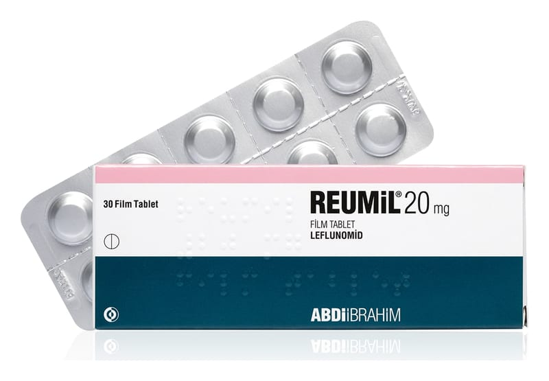

Reumil 20 mg Film Kaplı TABLET,30 Adet

Ne için kullanılır
KT · Bölüm 1• REUMİL romatizmaya karşı kullanılan ilaç grubuna dahildir ve etkin madde olarak 20 mg leflunomid içerir • REUMİL 20 mg film kaplı tablet sarı, üçgen, bikonveks, düz, film kaplı tabletlerdir. Tabletler 30 film kaplı tablet içeren aluminyum/aluminyum blister içerisinde bulunur.
REUMİL aktif romatoid artrit veya aktif psöriyatik artriti olan yetişkinlerde kullanılır. • Romatoid artritin belirtileri tutulan eklemde iltihap, şişlik, hareket zorluğu ve ağrıdır. Tüm vücudu etkileyen diğer belirtiler iştah kaybı, ateş, enerjide azalma ve kansızlıktır (kırmızı kan hücrelerinde azalma). • Aktif psöriatik artrit belirtileri ise tutulan eklemde iltihap, şişlik, hareket zorluğu, ağrı ve yama şeklinde kırmızı pullu deri döküntülerini (deri lezyonları) içerir.